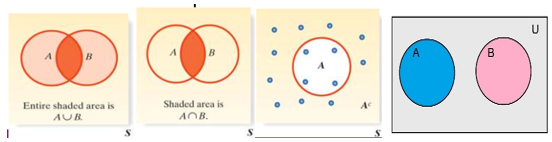
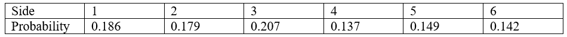
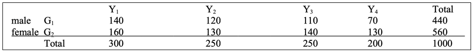
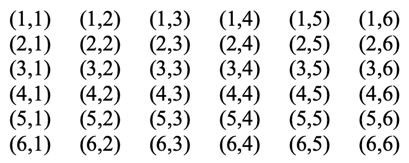
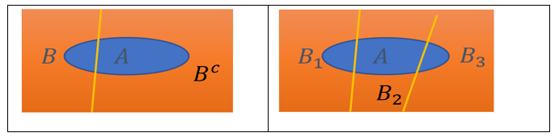
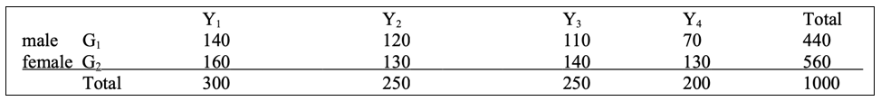
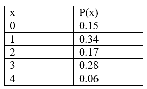

Chapter 5 MATH 224: Probability Basics
5.1 Quick Review:
Random Process: a process of observing possible but uncertain outcomes. Examples:
Rolling a die
Tossing a coin twice
Temperature (°F) in GSO at 3:00 pm every day
Sample space: a list of all the outcomes we might observe. Generally, a sample space of \(n\) possible outcomes: \(S = \{x_1, x_2, \ldots, x_n\}\).
Probability: a measure to describe how likely something will happen.
Two basic Probability Rules: For \(S = \{x_1, x_2, \ldots, x_n\}\),
\(0 \leq P(x_i) \leq 1\) for all \(i\)
\(\sum_{i=1}^n P(x_1) = 1\)
Assign probability (for sample spaces with discrete (finite or countably infinite) many outcomes):
The probability of an outcome is the proportion of times the outcome would occur if we observe the random process an infinite number of times
For equally likely outcomes: if the sample space has \(n\) outcomes, then
- an outcome \(x_i\) has probability \(\frac{1}{n}\), i.e. \(P(x_i) = \frac{1}{n}\).
- an event \(A\) that contains \(m\) outcomes has probability \(\frac{m}{n}\), i.e. \(P(A) = \frac{m}{n}\).
The principal relations of sets:
Union: \(A \cup B\) (“A or B”) is the set of all outcomes either in A or in B or in both
Intersection: \(A \cap B\) (“A and B”) is the set of outcomes that are in both A and B
Complement: \(A^c\) (“not A”) everything outside of A (but in S)
Disjoint (mutually exclusive) Events: There is no common outcome of A and B, \(A \cap B = \emptyset\) (empty set)

It is important to realize that \(A \cup B\), \(A \cap B\), and \(A^c\) are all sets; no element may be listed twice.
5.1.1 Probability Rules
General Addition Rule: \(P(A \cup B) = P(A) + P(B) - P(A \cap B)\)
Addition Rule for Disjoint Events: If A and B are disjoint, then
- \(P(A \cup B) = P(A) + P(B)\) (because \(A \cap B = \emptyset\))
This can be generalized: If \(A_1, A_2, \ldots, A_k\) are mutually exclusive, then
- \(P(A_1 \cup A_2 \cup \ldots \cup A_k) = P(A_1) + P(A_2) + \ldots + P(A_k)\)
Rule of Complementary Events: \(P(A) + P(A^c) = 1\) or \(P(A^c) = 1 - P(A)\)
Independent events: If the result of event A does not affect the result of event B, then A and B are independent. For example, flipping a coin: the result of the first flip does not affect the result of the second flip.
Multiplication Rule for Independent Events: If A and B are independent, then
- \(P(A \cap B) = P(A)P(B)\)
This can be generalized: If \(A_1, A_2, \ldots, A_k\) are independent, then
- \(P(A_1 \cap A_2 \cap \ldots \cap A_k) = P(A_1)P(A_2) \ldots P(A_k)\)
Note: “Disjoint” and “Independent” are different concepts.
Probability Distribution: A summary of all possible outcomes with their probabilities which can be represented by a table or formula or graph. A probability distribution should satisfy three rules:
The outcomes listed must be disjoint
Each probability must be between 0 and 1
The probabilities must total 1
Exercise 1. If you randomly select a letter from the phrase “Introduction of Probability” what is the probability that you select a vowel? (Express the answer in the form of a reduced fraction.)
Exercise 2. A set of 11 cards is numbered 1 through 11. A card is picked at random and the following events are defined:
- A: the number on the card is odd
- B: the number on the card is 5 or higher. Find
- \(P(A)\)
- \(P(B)\)
- \(P(A \cap B)\)
- \(P(A \cup B)\)
Exercise 3. If \(P(A) = 0.25\) and \(P(B) = 0.65\), and A and B are mutually exclusive, compute:
- \(P(A \cap B)\)
- \(P(A \cup B)\)
Exercise 4. If \(P(A) = 0.25\) and \(P(B) = 0.65\), and A and B are independent, compute:
- \(P(A \cap B)\)
- \(P(A \cup B)\)
Exercise 5. Determine if the following statements are True or False:
- If A and B are mutually exclusive (disjoint) events, then \(P(A \cap B) = 0\).
- For any event A, \(P(A) + P(A^c) = 1\).
- If A and B are independent events, then \(P(A \cup B) = P(A) + P(B)\).
Exercise 6. (Sample space where the outcomes are NOT equally likely): Professor Donald Fraser of the University of Toronto constructed a (purposely) uneven die. On inspection, it was clear that the sides would not have equal probability. He rolled it 12800 times and came up with the following empirical probabilities (based on relative frequency):

For the events A (even number) and B (at least 5), compute:
- \(P(A)\)
- \(P(B)\)
- \(P(A \cup B)\)
- \(P(A \cap B)\)
- \(P(A^c)\)
- \(P(B^c)\)
Exercise 7. A group of 1000 students is classified by gender (G1 = male, G2 = female), and by year, (Y1 = freshman, Y2 = sophomore, Y3 = junior, Y4 = senior). This results in the following table:

If a student is randomly selected find the probability that the student:
- Is a junior, \(P(Y3)\) =
- Is a female freshman, \(P(G2 \cap Y1)\) =
- Is a male or a junior, \(P(G1 \cup Y3)\) =
- Is not a freshman, \(P(Y1^c)\) =
- Is not a male and is not a junior, \(P(G1^c \cap Y3^c)\) =
Exercise 8. Here is the “Craps Game” sample space, where a red and a green die are rolled. Each outcome (i,j) represents the red die coming up i and the green die coming up j.

There are \(n = 36\) outcomes and for fair dice, it is reasonable to assume they are equally likely. Find the probability of each of the following events. Identify which pairs of events are disjoint.
- A: “sum is 7”, \(P(A)\) =
- B: “sum is 11”, \(P(B)\) =
- C: “sum is 6”, \(P(C)\) =
- D: “both dice show the same number”, \(P(D)\) =
- E: “both dice are odd”, \(P(E)\) =
- F: “both dice are even”, \(P(F)\) =
Exercise 9. If you flip a fair coin 4 times:
- What is the probability of getting all tails?
- What is the probability of getting at least one head?
Exercise 10. (page 93 3.8) The 2010 American Community Survey estimates that 14.6% of Americans live below the poverty line, 20.7% speak a language other than English at home, and 4.2% live below the poverty line and speak a language other than English at home.
If we let A = event that American lives below the poverty line; B = the event that Americans who speak another language at home, complete the following questions.
- Draw a Venn diagram summarizing the Survey estimations.
- What percent of Americans live below the poverty line or speak another language at home?
- What percent of Americans live below the poverty line and only speak English at home?
- What percent of Americans live above the poverty line and only speak English at home?
5.1.2 Conditional Probability, Independence, and Bayes’ Theorem
Quick Review:
Conditional Probability: \(P(A|B)\) = The probability of A under the condition that B has occurred.
\[P(A|B) = \frac{P(A \cap B)}{P(B)}\] \[P(A|B) = \frac{\text{the count of } (A \cap B)}{\text{the count of } B}\] (for contingency table or equally likely outcomes)
Multiplication Rule:
\[P(A \cap B) = P(A|B)P(B) \quad \text{or} \quad P(A \cap B) = P(B|A)P(A)\]
When A and B are independent:
\[P(A \cap B) = P(A)P(B)\] \[P(A|B) = P(A)\] \[P(B|A) = P(B)\]
Rule of Total Probability: The rule states that if the probability of an event is unknown, it can be calculated using the known probabilities of several distinct events.
\[P(A) = P(A|B)P(B) + P(A|B^c)P(B^c)\]
\[P(A) = \sum_{i=1}^{n} P(A|B_i)P(B_i)\] where \(B_1, B_2, \ldots, B_n\) is a partition of sample space \(S\): all \(B_1, B_2, \ldots, B_n\) are mutually exclusive and the union of \(B_1, B_2, \ldots, B_n\) is \(S\).

Bayes’ Theorem:
\[P(B|A) = \frac{P(A|B)P(B)}{P(A|B)P(B) + P(A|B^c)P(B^c)}\]
\[P(B_k|A) = \frac{P(A|B_k)P(B_k)}{\sum_{i=1}^{n} P(A|B_i)P(B_i)}\] where \(B_1, B_2, \ldots, B_n\) is a partition of sample space \(S\).
Probability Distribution: The random variable \(X\) with
- Expected value (mean) \(\mu = \sum x_i p(x_i)\)
- Standard Deviation \(\sigma = \sqrt{\sum (x_i - \mu)^2 p(x_i)}\)
Conditional Probability
Exercise 1: Given \(P(A) = 0.35\), \(P(B) = 0.64\), \(P(A \cap B) = 0.21\), find \(P(A|B)\) and \(P(B|A)\).
Exercise 2: According to NCAT website data in 2021-2022, 84.34% (11,236 out of 13,322) NCAT students are full-time students; 71.05% (9,465 out of 13,322) are in-state students. Assume that 60% are in both categories.
(a). Find the percentage of students who are full-time knowing that they are in-state students.
(b). Find the percentage of students who are in-state students knowing that they are full-time students.
Exercise 3: A group of 1000 students is classified by gender \(G_1\) (male) or \(G_2\) (female) and by year \(Y_1\) (freshman), \(Y_2\) (sophomore), \(Y_3\) (junior), or \(Y_4\) (senior). This results in the following table:

If a student is randomly selected, find the probability that the student:
- \(P(Y3|G1)\) =
- Interpret the result in a sentence.
- \(P(G2|Y4)\) =
- Interpret the result in a sentence.
Multiplication Rule
Exercise 4: There are 25 pens in a container. Among them, 20 are red pens and 5 are blue pens. If two are randomly selected, calculate the probability that:
(a). Both are blue.
(b). The first is blue and the second is red.
(c). The first is red and the second is blue.
(d). One is red and one is blue.
Exercise 5: There are 25 pens in a container. Among them, 20 are red pens and 5 are blue pens. If one is randomly selected, record the color, then put it back and select another one. Calculate the probability that:
(a). Both are blue.
(b). The first is blue and the second is red.
(c). The first is red and the second is blue.
The Rule of Total Probability and Bayes’ Theorem
Exercise 6: Assume that \(P(A|B) = 0.85\), \(P(A|B^c) = 0.01\), \(P(B) = 0.02\), find \(P(A)\).
Exercise 7: Assume that \(P(A|B) = 0.95\), \(P(A|B^c) = 0.24\), \(P(B) = 0.03\), find \(P(B|A)\).
Exercise 8: Suppose that the virus is present in 1.8% of the population. Due to errors of medical tests, for those who carry the virus, 99.5% test positive (true positive rate); and for those who do not carry the virus, 2% test positive (false positive).
(a). Determine the probability that a person will test positive.
(b). Determine the probability that a person who tests positive actually carries the virus.
- (Hint: Let A be the event that a person tests positive for a serious virus and B be the event that a person actually has the virus.)
Expected Value \(\mu\)
Exercise 9: Compute the expected value for the given probability distribution.

Exercise 10: An airline charges the following baggage fees: $20 for the first bag and $40 for the second. Suppose 53% of passengers have no checked luggage, 31% have only one piece of checked luggage, and 16% have two pieces. We suppose a negligible portion of people check more than two bags.
(a). Let \(X\) be the dollar amount of baggage-related revenue. Construct the probability distribution table.
(b). Use the result (table) of a) to compute the average baggage-related revenue.
(c). Use your own words to interpret the result of b).
(d). Find the standard deviation of baggage-related revenue.